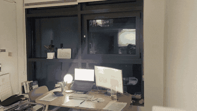
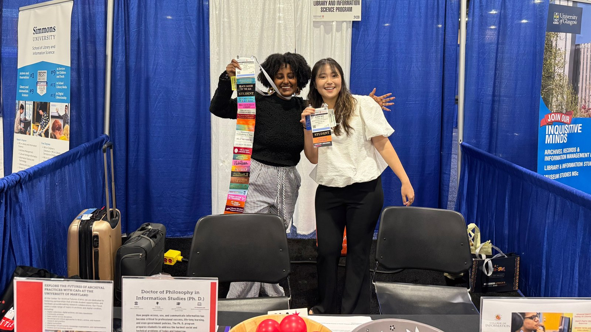

About Me

Hi, I am Subin Seo (Soo-bin, Suh). I am currently a first-year PhD student at UNC SDIS (School of Data and Information Sciences), advised by Dr. Rob Capra.
Bridging human-computer interaction (HCI) and information retrieval (IR), I study search as human behavior. Drawing on a background in library and information science, psychology, and statistics, I use experimental and mixed-methods approaches to examine how people search for, interact with, and make sense of information. I am particularly interested in how generative AI is reshaping these practices, and in designing systems that support users’ information needs while fostering learning and ensuring accessibility.
Education
- Ph.D. (in progress), University of North Carolina at Chapel Hill (Information and Library Science)
- M.S., University of Maryland, College Park (Library and Information Science)
- B.A., Jeonbuk National University (Library and Information Science; Psychology; Minor in Statistics)
Curious about what I studied in each program? Please see Coursework
Areas of Interest
My main area is human search behavior: how do people search with generative AI, and what are the outcomes of their searches? For more details, see my concept map.
Acknowledgements
My master’s studies in the United States were made possible by the Jeollanamdo Institute for Talent & Lifelong Education (Korean government), along with an alumni scholarship from Jeonbuk National University. I am deeply grateful for their support.
Previous Advisors
- Dr. Yiwei Xu, University of Maryland, College Park (Master’s thesis advisor)
- Dr. JungWon Yoon, Jeonbuk National University (Research advisor and current collaborator)
- Dr. HyoJung Oh, Jeonbuk National University (Academic advisor during undergraduate studies)
- Dr. Jongwan Kim, Jeonbuk National University (Research advisor in Psychology)
I would not be where I am today without the professors who have guided me along the way. I am forever grateful to each of them.
Personality
Go-getter & learner
I thrive on learning new things and exploring unknown territory. When I have a goal, hard work never feels hard. I believe my hard work can change society.

Team player
I grow most in team environments, learning from different viewpoints and drawing on others’ strengths, as well as from my advisors and colleagues.
